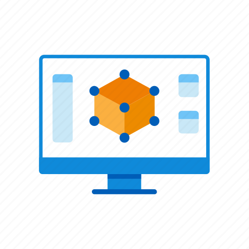
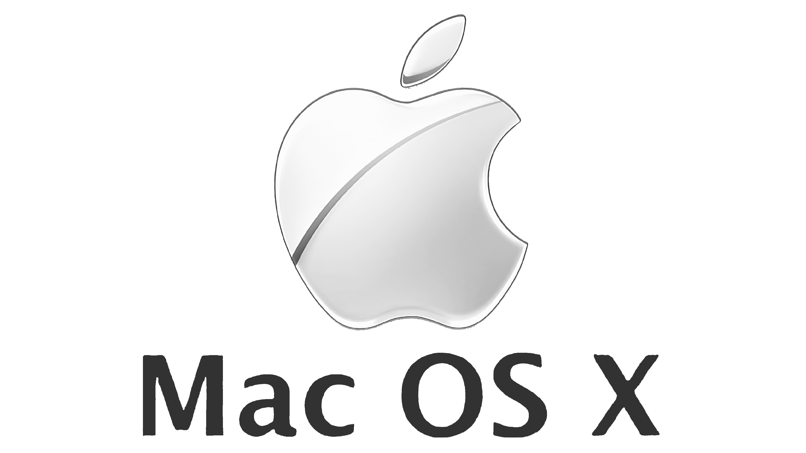
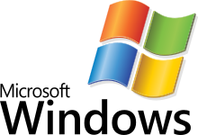

Digitalt utstyr
Nesten alt digitalt utstyr er datamaskiner som er bygget opp på den samme måten. En datamaskin består av
en skjerm, et kabinett med komponenter, et tastatur og som regel mus. Komponentene er koblet sammen via
et hovedkort.
Hovedkortet har flere kontakter, som er koblet til andre komponenter som hovedprosessor,
minnebrikke, harddisk og strømforsyning. Noen komponenter kan også sitte på hovedkortet, som Bluetooth,
USB-tilkoblinger og nettverkskommunikasjon.
BIOS
Nesten alt digitalt utstyr fungerer på samme måte. Når vi slår på en datamaskin, startes dataprogrammet
BIOS (Basic Input Output System). Programmet ligger på hovedkortet. Hovedkortet hjelper dataprogrammet
med å få kontakt med prosessor, minnebrikke for hurtigminne og harddisk, skjerm, tastatur og andre
enheter i datamaskinen.
BIOS setter i gang operativsystemet til datamaskinen. Operativsystemet er et
program som ligger lagret på harddisken, og når det er i gang overtar det for BIOS.
Operativsystemer
Operativsystemet kontrollerer og styrer kommunikasjonene mellom enhetene i datamaskinen og alle
programmene som kjører. Eksempler på opertativsystemer er Windows, macOs og Linux.
Operativsystemet sørger for:
- at programmene får tilgang til enhetene
- gjør komunnikasjon sikker
- gjør det eklere for programmene å kommunisere
- programmene kommuniserer etter tur og orden og på riktig måte
macOS

MacOS er et operativsystem utviklet av Apple. Operativsystemet kjøres på datamaskiner utviklet av Apple,
kalt Mac eller Macintosh. MacOS er kjent for å være lett å bruke, og har et grafisk brukergrensesnitt.
Mobilversjonen av MacOS heter IOS, og brukes på Appels andre enheter, som iPhone, iPod og iPad.
Windows

Windows er et operativsystem utviklet av programvarehuset Microsoft. Det første Windows-produktet ble
lansert i 1985, men det store gjenommbruddet var i 1990 med Windows 3.0. Windows 3.0 var det første
operativsystemet til Microsoft hvor man kunne organisere filer, se applikasjoner, ha flere applikasjoner
kjørende samtidig, virtuelt minne og mer effektiv minnebehandling.
Linux

Linux er en familie operativsystemer. De fleste av verdensß servere, og nesten alle superdatamaskiner
kjører Linux. Kildekoden til Linux er tigjelgelig for alle, og alle kan bruke den så lenge de følger
reglen oop åpenhen.
De ulike komponentene i en datamaskin
Hovedkort: brukes for å koble sammen alle de forskjellige komponentene i en datamaskin
Minnebrikke: Her ligger de andre programmene og dataene som skal brukes lagret.
Harddisk: lagrer operativsystem programmerer og datafiler. Har stor lagringskapasitet.
Prosessor: Her blir koden i et dataprogram lest og utført
Grafikkort: Tolker bilder og videoer og viser punktgrafikk på skjermen.
Nettverkskort: Har kommunikasjon med andre datamaskiner og enheter i omgivelsene. Kommunikasjonen er
enten via kabel eller trådløst.
USB-port: En port på utsiden av datamaskinen som gjør at man kan koble annet digitalt utstyr til
datamaskinen.